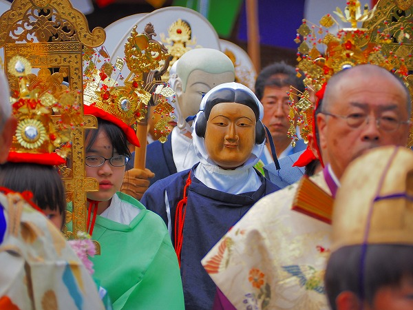
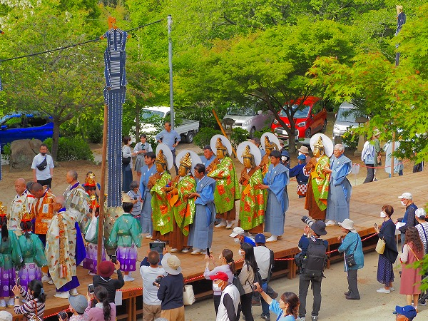
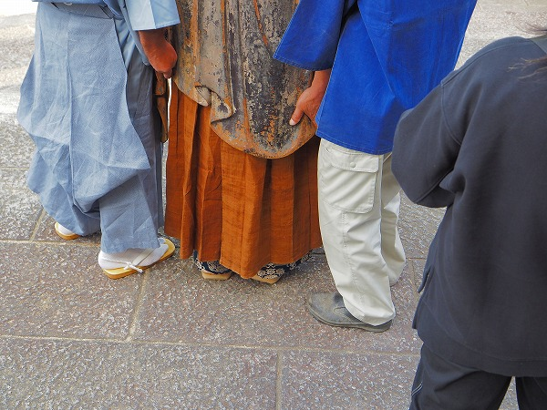

岡山県の瀬戸内市に踟供養（ねりくよう）という行事がある。
これは人間が死ぬ際に天から菩薩が迎えに来て極楽に往生する様子を表した祭りである。
この行事、練供養という名称で日本中に何カ所か存在はするのだが、ここ、弘法寺の踟供養は他とは少し様子が異なる。
一般的な練供養とは人間が菩薩の仮面をつけて練り歩くもので、きらびやかな衣装と菩薩の面をまとったその姿はまるで本物の仏像が歩いてきたかのような不思議な世界が展開される。
ここの踟供養も仮面をつけた練行列で、その点はあまり他の練供養と大きな違いはないのだ。
しかし、大きく異なるのはこの練行列を「本物の阿弥陀仏の像」が「歩いて」出迎えるのだ！
しかも阿弥陀様、お辞儀までするらしい！
一体どういうことか？
まさかカラクリ仕掛けの仏像が茶運び人形のようにカクカク歩いて本堂から出てくるのだろうか？
そんなわけはないか、と思いつつ事の真相を確かめに岡山に向かったのであった！
踟供養が行われるのは瀬戸内市の牛窓。
古くから風光明媚な場所として有名な観光地だ。
駐車場があるかどうか不安だったが、取り敢えずありました。
境内に入るといきなり特設の木製の通路に迎えられる。
この上を菩薩たちが歩くのだろう。まるでファッションショーのランウェイのようだ。
通路は階段の下から一直線に伸び、突き当りには五色の布で囲まれたブースのようなものがある。
これは娑婆と呼ばれていた。
さらに階段を登ると、正面には本堂。
本堂向かって右奥には遍照閣という御堂がある。
そのお堂の前にはスロープが設けられている。
どうやら行列はこのお堂からスタートし、本堂の前で左折し、階段を下りて木製ランウェイを進み、突き当りのブースに到達し、再び戻って来るようだ。
本堂には大きな阿弥陀仏が置かれていた。
これが「歩く仏像」だ！
鎌倉時代に造られた仏像だという。
見たところ機械仕掛けで動く様子はない。そりゃそうだよ、鎌倉仏だもの。
…という事は仏法の秘法を以てマジカルパワーによって歩くのだろうか！？はあはあ。
仏像をよーく見ると仏像の膝の上辺りから像の色が白っぽくなっている。
ははーん、これは多分上下がセパレート式になっていて、上の部分の中に人が入って歩くんじゃないだろうか…
そういえば胸の辺りに四角い覗き窓のようなものがあるぞ。
機械仕掛けやマジカルパワーではなかったが、それでも仏像の中に人が入って動くなんてかなり突拍子もないことじゃないか！
これは期待してイイんじゃないか？
本堂での法要も終わり、いよいよ踟供養のメインである仮面行列の始まりだ。
）
御詠歌に導かれるように遍照閣の奥から人々が出てくる。
錫杖を持った人物を先頭に稚児や楽器を持った人々が練り歩いてくる。
その数は数十人。
その後ろにいよいよ仮面ズが現れる。

最初の仮面は天童と呼ばれる2体。
何か薄ら笑いをしていて少し気味が悪い。
その後ろに地蔵が2体。
これもまた俯きがちでやや不気味。
そして最後に観音が6体続く。
6体の観音は金色の尊顔に豪華な冠、きらびやかな袈裟、とさすがに圧倒的な存在感を示している。
本当に本物の仏像が歩いてきているかのようである。
茶色い手袋が妙にリアルな仏像っぽい。
銅鑼や笛、笙、法螺貝などの音が入り混じり、勇ましい中にも雅な雰囲気を漂わせながら行列は進む。
本堂前を左折し、いよいよ最難関の石段下りだ。
仮面を付けた面々は小さな覗き穴は開いているのだろうが、多分正面のごく限られた範囲しか見えていないと思う。
従って、一体一体に裃を着た御付きの人が歩行補助をすることになっている。
実際、下りの石段はほぼ下が見えないようで、御付きの人が事細かく指示していた。
実際全く足元が見えない状態で石段下りるって…恐いだろうなあ。
そんなこんなで無事、石段を下りる。
行列の先頭は既に一番奥の娑婆付近に到着している。
ここで稚児や楽器を持つ人たち、天童、地蔵は左右に分かれ菩薩の到着を待つ。
そこに菩薩がやって来て娑婆の前に進む。
娑婆とは文字通り人間界を意味している。
つまり、この踟供養とは先程出発した菩薩が人間界まで下りてきて、死者の魂を極楽浄土まで導く様子をビジュアル化したものなのだ。
いわば人が死んで極楽へ往生するまでのシュミレーション的な意味があるのだ。
ところで、この同じ時間帯に石段の上の本堂内でもうひとつのアクションが起こっている。
それは本堂内にあった阿弥陀仏が外に担ぎ出され、人間に着装されるのだ。
いくら刳り貫いてあるとはいえ、それなりの大きさの仏像である。
さぞかし立派な体躯の人が中に入るのだろうと想像していたら、中に入ったのは痩せた年配の人物だった。
まあ、仏像の内部もそんなには広くないからこれが最適解なのだろう。
かくして日本で唯一の仏像と人間が一体化した被り仏が出現するのであった。
一方、ランウェイに話を戻す。
娑婆の前には2体の観音が進み出る。
そのうちの1体は蓮台を持っている。
娑婆の中には先程本堂で読経をしていた住職が座っている。
その前には台座に乗った小さな座像の姿が。
これは中将姫といい、二十五菩薩が来迎し、生きたまま西方浄土に行ったという伝説を持つ人物で、浄土信仰のシンボル的存在なのだ。
その中将姫の像を観音が受け取る、ということはまさに現世の人間が観音をはじめとした菩薩に導かれ極楽に旅立つことを意味しているのだ。
観音が中将姫の像を受け取り、もう一人の観音の持つ蓮台に乗せる。この祭りのクライマックスである。
中将姫の像の乗った蓮台を今度は最初に中将姫を受け取った観音に蓮台ごと返す。
これで中将姫は浄土への旅立ちの準備を終えたことになる。
観音と共に浄土へと旅立つ。

そして再び、一行は浄土を目指して来た道を戻るのである。
行道橋を進み、石段を上る。
しかしそこには行きには見られなかった光景が現れる。
浄土に戻る一行を先ほど人間と一体化した阿弥陀仏が迎えるのだ。
これを「迎え仏」という。
阿弥陀仏は周囲の人々より頭一つ以上抜き出ており、遠くからでもかなり目立つ。

しかし、よく見ると衣の下にはさっきのおじさんの足が見える。
そして左右に付いた介添人が阿弥陀仏の裾の部分をしっかり持ち上げてサポートしているぞ。
涙ぐましい努力じゃないか！
何とか仮面ズが石段を上ってきたところを迎え仏こと阿弥陀仏は一礼をする。
一礼とはいえ、左右の人が無理矢理像を斜めにさせているだけなのだが、脳内で補正すると、あら不思議。
阿弥陀様が菩薩に導かれた中将姫に頭を下げ、「浄土によく来たね」と言っているように見えるのだ。
おそらく周りにいる人たちも同じように感じているのではないだろうか。
コロナ禍で中断していて、久し振りに再開されただけあって毎回見に来ている地元の人達もテンションが高めなような気がする。
仏法で仏像を動かす、というサイキックな現象は見られなかったが、その代わりにまるで本物の仏像が動いているかのような奇跡的な光景を目にすることが出来た。
それが本物に見えるのは仏教パワーのなせる業なのではなかろうか。
行列は阿弥陀様の歓待を受け、本堂の前で右折し、最初の遍照閣へと戻っていく。
次々とお堂の中に入っていき、仮面ズもお堂へと吸い込まれようとしている。
その後ろを阿弥陀仏も付いてくる。
阿弥陀様は重いんだから本堂の前のお出迎えだけで充分だと思っていただけに、この必死の行進は想像外だった。
左右の介添人がいるとはいえかなりの重労働だと思う。
転ばぬよう気を付けてくだされ～！
菩薩とともに中将姫も堂内に吸い込まれていった。
これで中将姫の魂は極楽浄土に到達したという事になる。めでたしめでたし。
これにて踟供養の行事は終了となる。お疲れ様でした。
特に阿弥陀様。
最後に、一旦お堂に入った仮面ズが再び外に出てきてファンサービスの記念撮影タイム。
傾きかけた初夏の光を浴びて観音の金色の仮面が輝いていた。
最後にもうひとつファンサービス。
阿弥陀仏の被りものの中から「中の人」が出てきて「種明かし」。
最後は仏像を横にして阿弥陀像の中身を見せるサービスっぷり。
数百年前の貴重な仏像がゆらゆら動いて人々の目の前に現れる様はまさに奇跡のようである。
普通だったら博物館の中に安置されているべき貴重な仏像をここまでアクティブに扱っている所は他にはないんじゃなかろうか。
人々はこの被り仏や仮面行列がつくりものであることは重々承知していながらも、それでもどこかで自分が死ぬときに菩薩に迎えられて極楽に往生するシーンをこの行列に重ねているのだろう。
極楽往生への願いは現代も鎌倉時代も、何一つ変わらないのである。